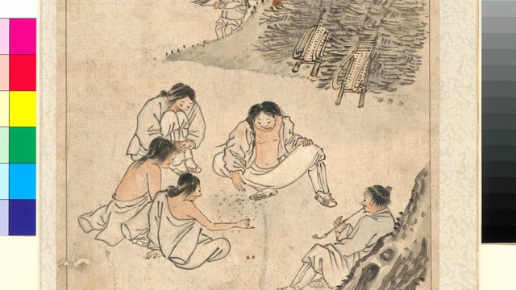
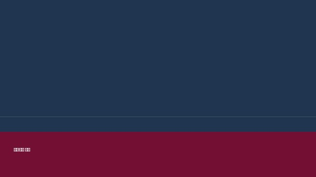
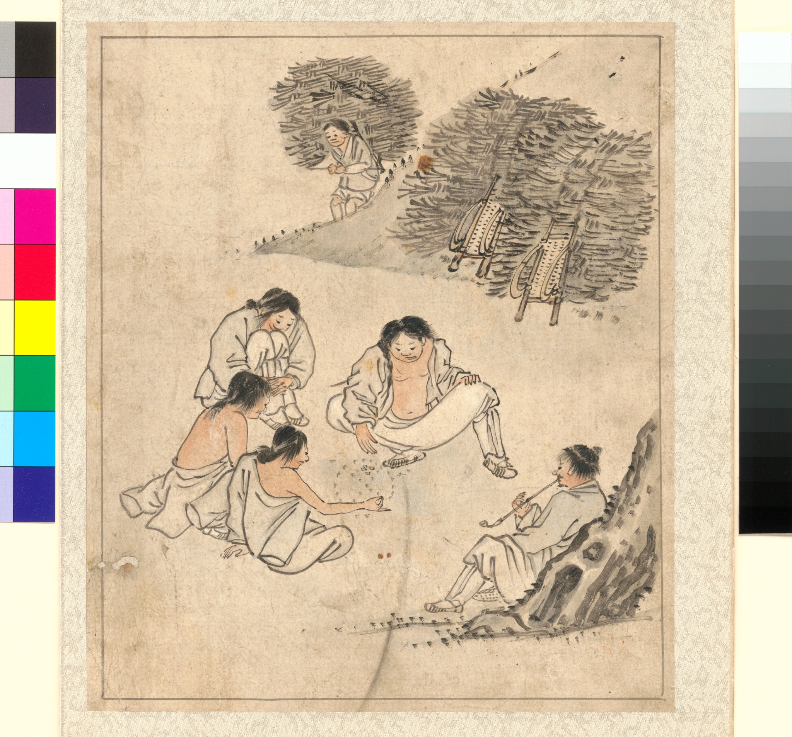

Rebirth Academy Official Archive
환생교육원
생과 생의 사이에서 머무는 이들을 위해 마련된 가상 교육기관입니다. 심사 절차, 안내 영상, 학사 일정, 공지사항을 한 페이지에서 확인할 수 있도록 구성했습니다.
필수 이수 교육

환생 심사 전 준비 과정 안내
초심자 등록, 임시 식별번호 발급, 심사 전 대기 절차를 한 번에 확인할 수 있는 기본 안내입니다. 심사장 입장 전 확인해야 할 금지사항과 제출 서류를 함께 정리했습니다.
환생교육원 입문 강의
교육원 내부 규칙, 상담실 이용법, 이동 동선, 교육원 게시판 확인 방법을 설명하는 입문용 항목입니다. 처음 방문한 대상자가 가장 먼저 읽어야 하는 안내문 형식으로 제작했습니다.

공지·서약서 확인 절차
트리거 워닝과 커뮤니티 서약서 항목을 확인하고, 대상자 본인의 이해 여부를 점검하는 절차입니다. 세부 내용은 하단 공지사항에서 확인할 수 있습니다.
홍보 영상
환생 교육원 홍보 영상
환생교육원은 심사 대상자가 새로운 생의 방향을 정하기 전, 자신의 기억과 선택을 정리할 수 있도록 돕는 가상 교육 기관입니다. 이 홍보 영상은 교육원의 주요 시설, 접수 절차, 심사 대기 과정, 상담 안내를 짧게 소개하는 형식으로 구성되어 있습니다.
교육원에 도착한 대상자는 먼저 임시 등록을 완료한 뒤, 담당 안내원의 확인을 거쳐 대기 구역으로 이동합니다. 이후 이전 생의 기록, 미해결 감정, 관계 정리 상태 등을 바탕으로 기본 분류가 진행됩니다.
심사 기간에는 강의형 안내와 개별 상담이 병행됩니다. 강의에서는 환생 규정, 기억 보존 범위, 선택 가능한 경로, 금지 행위가 설명되며, 상담에서는 대상자의 판단을 보조하는 질문이 제시됩니다.
본 페이지의 모든 일정과 공지는 실제 교육기관의 행정 정보가 아니라 세계관 이해를 돕기 위해 작성된 허구의 자료입니다. 따라서 등장하는 기관명, 일정, 절차, 용어는 현실의 제도와 직접 연결되지 않습니다.
영상을 시청한 뒤에는 하단의 학사 일정과 공지사항을 확인하면 전체 흐름을 더 쉽게 파악할 수 있습니다. 특히 트리거 워닝과 커뮤니티 서약서는 참여 전 반드시 확인해야 하는 기본 항목으로 설정되어 있습니다.
학사 일정
환생 심사기간 일정을 확인하세요.
